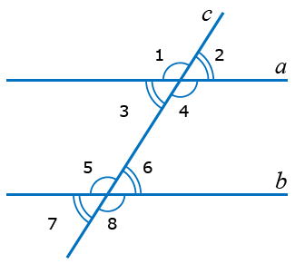

При поступлении в лицей необходимо уметь решать задачи по следующим темам:
✓ аксиомы планиметрии;
✓ смежные углы, их свойства;
Смежные углы – это углы, у которых одна сторона общая, а другие стороны лежат на одной прямой. Запишем свойства смежных углов.
1) Сумма смежных углов всегда равна 180 градусов;
2) Если два смежных угла равны между собой, то они являются прямыми.
✓ вертикальные углы, их свойства;
Вертикальные углы – это пара углов, которые образуются при пересечении двух прямых (отрезков). Такие углы не имеют общих сторон, по сути стороны одного угла представляют собой продолжение сторон другого угла. Основное свойство вертикальных углов: градусные меры вертикальных углов равны между собой.
✓ углы, образованные при пересечении двух прямых третьей;
При пересечении двух параллельных прямых (a и b) третьей (c) образуются углы:
1. Накрест лежащие (3 и 6, 4 и 5).
2. Односторонние (3 и 5, 4 и 6)
3. Соответственные (5 и 1, 6 и 2, 7 и 3, 8 и 4)
Накрест лежащие углы равны (∠3 = ∠6, ∠4 = ∠5)
Сумма односторонних углов равна 180˚ (∠3+∠5=180˚, (∠3+∠5 = = 180˚)
✓ перпендикулярные прямые;
✓ параллельные прямые;
✓ признаки параллельности прямых;
✓ определения медианы, высоты, биссектрисы треугольника;
Медиана треугольника — это отрезок в треугольнике, соединяющий вершину треугольника с серединой противоположной стороны.
Высота треугольника — это перпендикуляр, проведенный из вершины треугольника к прямой, содержащей противоположную сторону.
Биссектриса угла треугольника – это луч, который соединяет вершину треугольника с противоположной стороной, при этом разделяя угол пополам.
✓ признаки равенства треугольников;
1. По двум углам и стороне между ними
2. По двум сторонам и углу между ними
3. По трём сторонам
✓ задачи на построение треугольников;
✓ равнобедренный треугольник, его свойства, признаки;
Признаки:
1. Если у треугольника два угла равны, то этот треугольник является равнобедренным треугольником.
2. Если в треугольнике высота совпадает с медианой, то этот треугольник является равнобедренным
3. Если в треугольнике высота совпадает с биссектрисой, то этот треугольник является равнобедренным
4. Если в треугольнике биссектриса совпадает с медианой, то этот треугольник является равнобедренным
Свойства:
1. Если треугольник является равнобедренным треугольником, то углы при его основании равны.
2. В равнобедренном треугольнике медиана, биссектриса и высота, проведённые из вершины, противолежащей основанию, совпадают.
✓ сумма углов треугольника;
✓ соотношение между сторонами и углами треугольника;
1. В треугольнике против большей стороны лежит больший угол
2. В треугольнике против большего угла лежит большая сторона
3. Каждая сторона треугольника меньше суммы двух других сторон
✓ внешний угол треугольника, его свойство.
Внешний угол равен разности между 180° и его внутренним углом, смежным с ним.
Свойство: Внешний угол треугольника равен сумме двух оставшихся углов треугольника, не смежных с этим внешним углом.
Образцы решения и оформления геометрических задач:
Пример 1.
В треугольнике АВС медиана BD равна половине стороны АС. Найдите угол В треугольника.
Дано: ΔАВС; D∈AC; AD=DC (или BD-медиана); BD= 1/2 AC.
Найти: ∠АВС
Решение: AD=DC по определению медианы, тогда BD=AD=DC – по условию. ΔABD и ΔDBC равнобедренные по определению.
∠1=∠2, ∠3=∠4 – углы при основаниях равнобедренных треугольников.
∠1+∠2+∠3+∠4=180° - сумма внутренних углов треугольника.
∠1+∠3=∠2+∠4=∠АВС – сумма равных углов.
Тогда ∠АВС=180°/2, ∠АВС=90°. Ответ: ∠В=90°.
Пример 2.
Докажите, что треугольники $$\mathrm{ABC} \text { и } \mathrm{A}_1 \mathrm{~B}_1 \mathrm{C}_1$$равны, если$$\mathrm{AB}=\mathrm{A}_1 \mathrm{~B}_1, \quad \mathrm{AC}=\mathrm{A}_1 \mathrm{C}_1, \quad \mathrm{AM}=\mathrm{A}_1 \mathrm{M}_1, \quad \text { где } \mathrm{AM} \text { и } \mathrm{A}_1 \mathrm{M}_1$$– медианы треугольников.
$$\begin{array}{rr} \text { Дано: } & \Delta \mathrm{ABC} & \Delta \mathrm{A}_1 \mathrm{~B}_1 \mathrm{C}_1, & \mathrm{AB}=\mathrm{A}_1 \mathrm{~B}_1 & \mathrm{AC}=\mathrm{A}_1 \mathrm{C}_1, & \mathrm{AM}=\mathrm{A}_1 \mathrm{M}_1 & - \text { медианы. } \end{array}$$;
Доказать:$$\triangle \mathrm{ABC}=\triangle \mathrm{A}_1 \mathrm{B}_1 \mathrm{C}_1$$;
Доказательство:
$$$$;